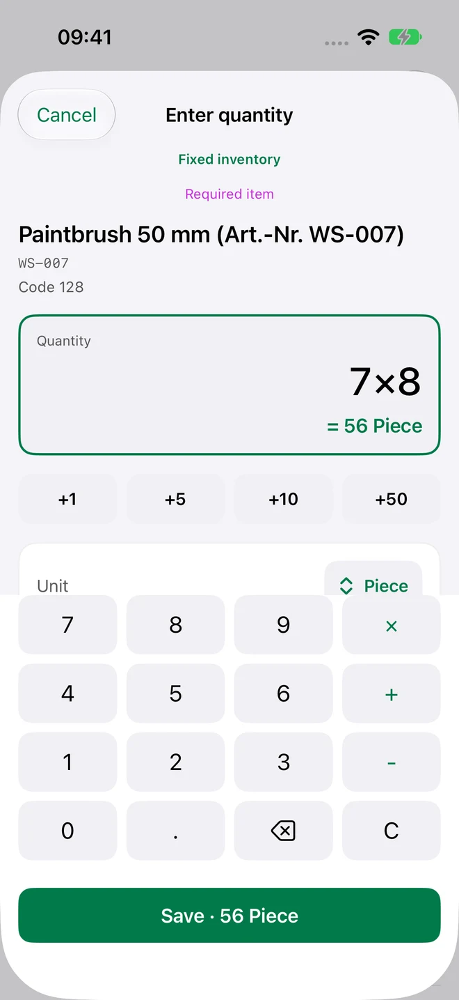
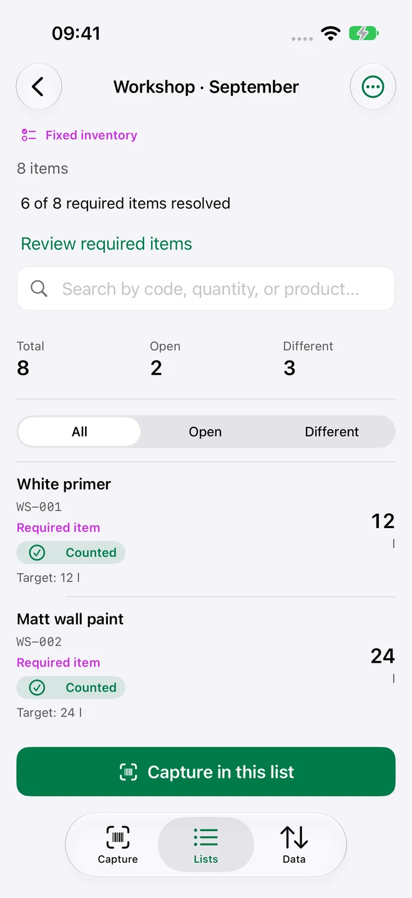
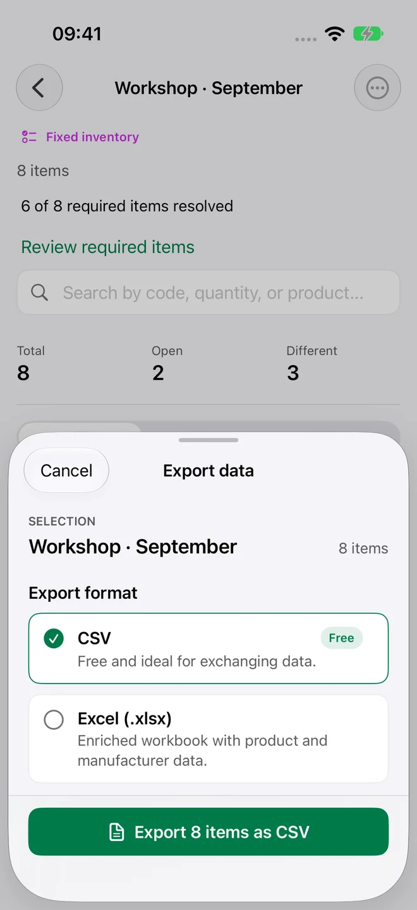
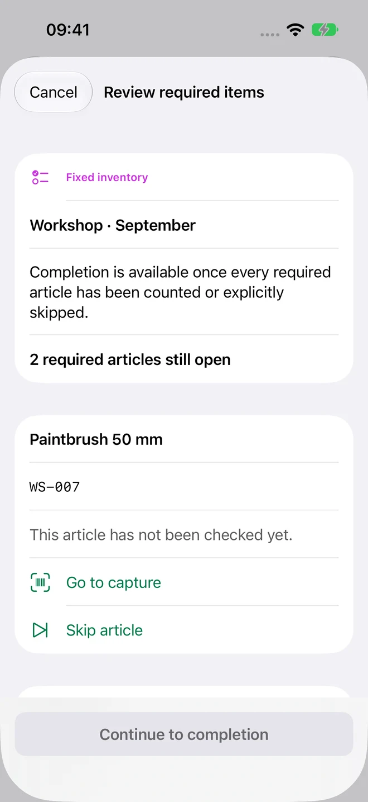
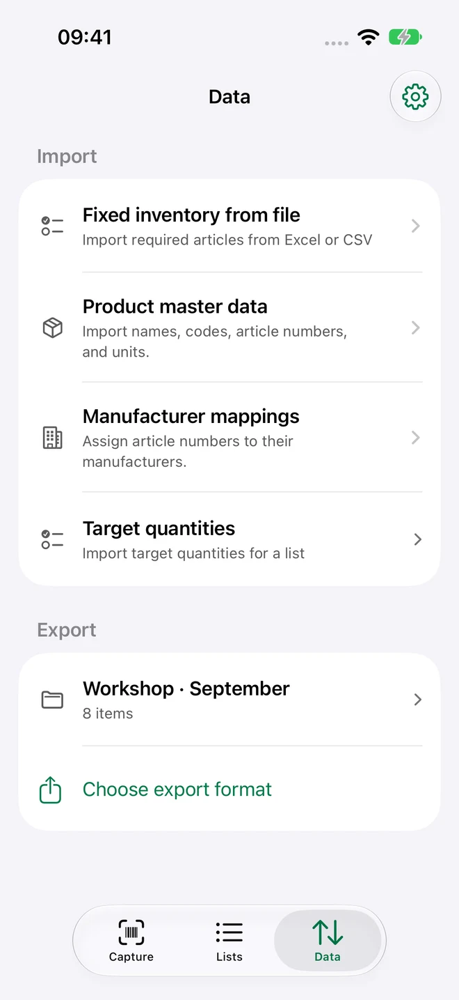
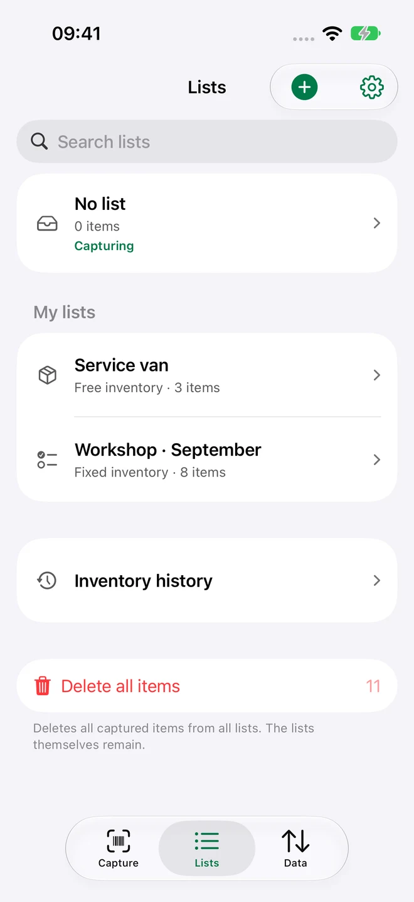
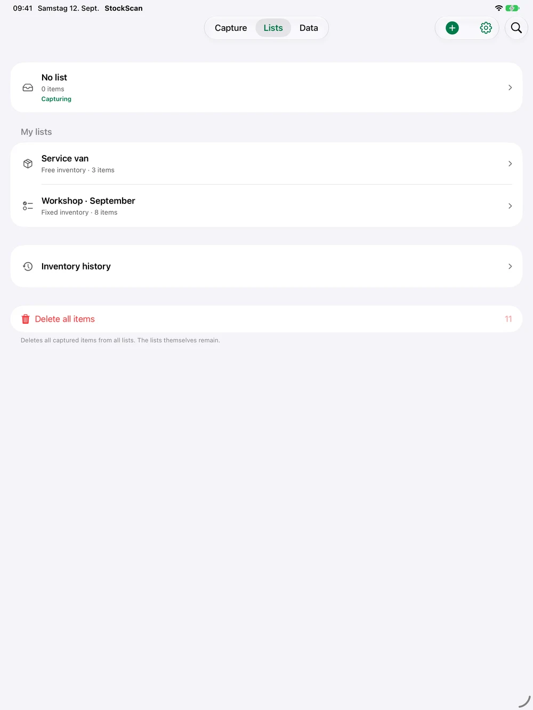

Capture01
Scan the code.
Add the quantity.
Scan a barcode or enter an item number. Calculate packs right in the app and save quantity, unit and comment.

From the first scan to your finished report. Count what’s there. See what’s missing. Turn your stock into a list that makes sense.
1 active inventory · 100 items · Free CSV export

Three clear workspaces take you through your inventory: Capture, Lists and Data.
Scan a barcode or enter an item number. Calculate packs right in the app and save quantity, unit and comment.

Organise your stock. Fixed checklists show what’s still open; Pro adds target-versus-actual comparisons.
Import product data, complete your inventory and share a report. CSV is free; enriched Excel reports come with Pro.

Every inventory starts differently. Begin with the items in front of you, or bring in a fixed checklist from Excel, CSV or TSV.
Scan required items in any order. Additional items are clearly marked separately.
Before completing, count remaining required items or explicitly skip them. A counted zero stays distinct from a skipped item.
Reset counts and reuse the same checklist. Unique product-data matches fill in missing names, EANs and units.

Spare parts in storage, materials in the workshop or equipment in your service van: capture your stock wherever you need to. Even without an internet connection.
7 × 8 instead of typing 56. Quantity calculations, custom units and comments are right there in Capture.
Import products and manufacturer or supplier mappings. Review the detected data before adding it.
Keep an immutable record of your completed count. Existing inventory data stays readable even without Pro.
Fast Scan adds repeat counting and configurable count steps for your packs.
Live Activities show inventory progress on the Lock Screen and in the Dynamic Island on supported iPhones.
Intelligent column recognition uses Apple Intelligence on supported devices when available. Standard recognition stays available.
Real views of StockScan 1.4 with workshop sample data. On iPhone and iPad.



Use the native iPad interface for your lists. Count a single item on Apple Watch for free; Pro puts complete inventory lists on your wrist. When disconnected, changes are queued until your iPhone confirms them.
iPhone · iPad · Apple WatchA complete inventory for free. More tools when you need them.
Download for free and start counting.
Available as a monthly or annual in-app subscription.
Prices and any available trial are shown in the App Store before purchase. Subscriptions renew automatically and can be cancelled through your Apple account. Previous buyers of the paid app keep permanent Pro access. Your existing data remains readable and exportable as CSV without Pro. EULA · Privacy
No StockScan account required. Your core inventory works locally, without advertising or tracking in the app.
PrivacyCapture stock without an internet connection. Local inventory data stays the foundation of your work.
With Pro, optionally sync inventories through your private iCloud database across your own Apple devices. Imported master data stays local.
Apple Family Sharing shares the Pro entitlement with your family. It does not share inventories or your private iCloud database.
One active inventory with up to 100 different items, free or fixed counting, quantity calculations, master-data imports, completion, history, unlimited CSV exports and the Apple Watch single-item counter.
A free inventory captures the items you find. A fixed inventory starts with an imported checklist. Every required item must be counted or explicitly skipped before completion. Additional items are marked separately.
Yes. Import product and manufacturer data from XLSX or CSV. Fixed checklists also support TSV. CSV exports are free and unlimited; enriched Excel reports require Pro. Export Numbers documents to XLSX or CSV first.
Core inventory works offline. Purchases, restores and optional iCloud sync need a connection to Apple services. Watch counts are queued when the connection is interrupted.
StockScan runs on iPhone and iPad with iOS or iPadOS 18 and later. The paired Apple Watch companion requires watchOS 10 or later. Live Activities, Dynamic Island and Apple Intelligence also depend on device support and system availability.
Existing inventory data remains readable and exportable as CSV. Free limits apply again to new lists and items. Pro features such as XLSX and iCloud sync require an active entitlement. Previous buyers of the paid app keep permanent Pro access.
Download StockScan for free. Create your first list. Start counting.
Download on the App Store